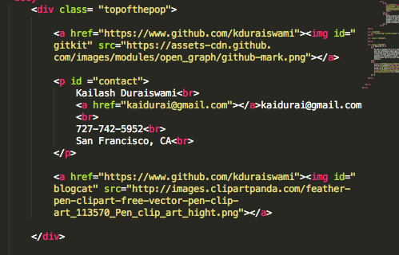
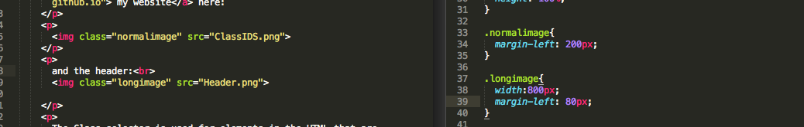

Classes vs IDs in HTML/CSS
Best Practices
December 19, 2014
For this week's blogpost on HTML/CSS I decided to write about a topic that confused me; how to choose between Classes vs IDs when defining a CSS selector. I found the existence of both selectors confusing because they appeared to accomplish the same goal. CSS Selectors allow you to apply CSS changes to HTML elements with variating specificity; on that site we can see examples of the syntax for both CSS selectors. Both IDs and Classes are empty by default, browsers will not populate any CSS attributes to a simply named ID or Class. From my research, part of properly defining rules and classes is increasing performance and load times in a browser.
The ID selector is used for an individual, specific HTML element. Common IDs would be for the nav bar or the footer of a page. The nav bar might be an unordered list in its most basic HTML form, but it will likely get very different CSS treatment for usability. Here are some examples of how I used classes and ids in the header of my website here:

and the header:
The Class selector is used for elements in the HTML that are used more than one time. This may be the appearance of ordered and unordered lists. Classes may also be the appearance of menu buttons within a navigation bar. In the example above for my site the "topofthepop" is a class that captures three different elements. While there may be only one nav bar with an ID, the links within the nav bar may displayed using a "button" class. In the example above there are three IDs within the class defined as "topofthepop." The "gitkit," "contact," and "blogpen" IDs only appear once in the entire HTML document and describe the unique elements even within the "topofthepop."
Even the images above are displayed using classes by the way! in my blog-template and css stylesheets I use different classes for long and short images. Like this (long image):

Here are a few best practices I thought of when using IDs and Classes:
- If more than one element will need the same styling, use a class.
- If only one element will use the styling then its best to use an ID selector.
- Use names that defines the function of the HTML the class or id encompass, not just the appearance. For example: "navigation bar" vs "royal blue."
- Try not to use classes and IDs to replicate HTML elements like h1, h2 and p.
- Rather than overuse classes, try to use div to improve performance.
The best practices above offer simple methods to creating classes and IDS as CSS selectors. Perhaps the easiest two questions to ask are:
- Will this CSS selector be used more than once in our HTML file?
- What is a functionally descriptive name for the CSS selector?
When creating CSS selectors it is important to be thorough and clean. Having too many nested Classes and IDs might affect site performance and loading times. Also it is a best practice to not replicate HTML elements like headers and paragraphs to improve performance.